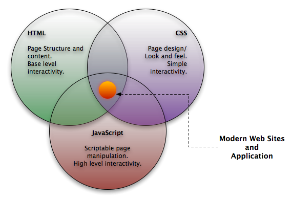

Web Frontend
HTML5 = HTML + CSS + JS
Created by NTUgEEk前端技術
HTML
決定網頁的架構！
ex: 標題、框架、區塊…
CSS
決定網頁元素的style!
ex: 顏色、大小、對齊…
JS
讓網頁動起來！
ex: 與使用者互動、動畫、伺服器溝通…
HTML 語法
標籤語法，主要有兩種標籤:
- 成對標籤: ...
- 單獨標籤:
Dom tree

<html>
<head>
<title> HTML5 is cool </title>
<meta name="author" content="NTUgEEk">
<meta charset="UTF-8">
</head>
<body>
<h1> Heading 1 </h1>
<p> Paragraph 1 : A Link <a href="google.com">Here</a> </p>
<ul> <li> List 1 </li> <li> List 2 </li> <li> List 3 </li> </ul>
</body>
</html> Some Important Tag
- , ,
- ,
- ,
- ,
- , , , , ,
- ,
CSS Syntax

CSS - Where To?
<html>
<head>
<link rel="stylesheet" type="text/css" href="link/to/style.css">
</head>
<body>
<p style="color: red;"> Paragraph to be styled </p>
</body>
</html> CSS Selector
p {
/* Select every <p> tag */
color: red;
border: solid 1px black;
}
.ClassName {
/* Select every tag which have class "ClassName"
Ex: <div class="ClassName">*/
float: left;
}
#IDName {
/* Select every tag which have id "IDName"
Ex: <div id="IDName"> */
text-family: monospace;
}CSS Selector More
p a {
/* Select each <a> inside <p> */
color: red;
}
.ClassName #IDName {
/* Select every tag which have id "IDName" in class "ClassName" */
float: left;
}
p::before {
/* Insert at begin of content */
content: "I wrote:"
}CSS Box Model

CSS property
- width, height
- color, background-color
- margin, border, padding
- display, float
CSS Compatibility
Remember to check out reference for cross browser compatibility
div {
-webkit-transition: background-color 2s;
-moz-transition: background-color 2s;
-o-transition: background-color 2s;
transition: background-color 2s;
} Useful Tool
Debugger: Your Browser !
Ex: Chrome - F12
Useful Tool
Compass + Sass: A new way to write css
Javscript
讓你的 Web 活起來
and much more...
What is Javascript?
- 簡稱 JS，直譯式語言
- 物件導向 (prototype)
- DOM ，處理網頁內容的方法與介面
- BOM ，與瀏覽器互動的方法與介面
Getting Started
比較新的 Browser 都有所謂的 Inspector 可以讓我們檢測網頁的各種資訊和狀態
- 在你的 Browser 中按下
<F12> - 切換到 Console (主控台) 的 Tab
- 輸入
console.log("Hello JS!");後<Enter>
Basic
- 基本的 Syntax 與 C++ 相同
- 所有變數都是由
var關鍵字來宣告 - 一般的 controll flow 寫法如
if elseforwhile與 C++ 相同 - 函數由
function關鍵字來宣告
Example
function printNumber(from, to) {
if(from > to) {
console.log("Nothing to print.");
return;
}
for (var i = from; i <= to; i++)
console.log(i);
}
printNumber(4, 15);
Note:
一個跟 C++ 不同的 behavior 如下
var x = 1;
if (condition) {
var x = 2;
// somthing more...
}
console.log(x); // get output: 2
設定變數名稱時不要重複最安全！
Array (List)
var arr = [1, "test", 4];
console.log(arr.length); // 3
for (var i = 0; i < arr.length; i++)
console.log(arr[i]);
// 1
// test
// 4
arr.push("asdf");
console.log(arr); // [1, "test", 4, "asdf"]
console.log(arr.pop()); // asdf
Key ideas:
- 內容不限型態
-
也是物件，有一些內建的 methods
(
push,popetc)
Object (Hash)
var obj = {
name: "geek",
num: 123,
hello: function() {
console.log("hello, I'm a " + this.name);
}
};
obj.hello(); // hello, I'm a geek
obj["hello"](); // hello, I'm a geek
Key ideas: 物件就是 mapping
So, What can JS do?
- 本 Slides 就是用 JS 做出來的
- Chrome Web Store 的各種 App 都是用 JS 寫的
- 近年來也可以在 Browser 之外看到 JS 的應用了 (ex: nodejs)
Use JS in Web
<html>
<head>
<script>
// your js code here
</script>
<!--or external js file-->
<script src="path/to/js/file.js"></script>
</head>
<body>
</body>
</html>
script 可以放在
html tag 中的任何地方
DOM Manipulation
要用 JS 來讓 Web 動起來，就必須知道如何操作 DOM
JS 本身有提供一套 API 來操作 DOM，但也有很多的人喜歡用 jQuery
Learn Javascript
- MDN Javascript Docs
- Stack Overflow
- 讀別人的 source code (還滿有用的)
- Practice
JS Libraries
JS 的 lib 可以說是非常之多一個收集各種 js lib 的網站 JSDB.IO
Read Reference (Docs)
- 看看 example code
- 從 API Reference 中找自己需要的功能
- 在自己的電腦上測試
- 如果碰到問題就 google
Future - ES6
- Better scope:
let,const - Fix suck
this: Arrow Functions - 各種很像 python 的 features XD